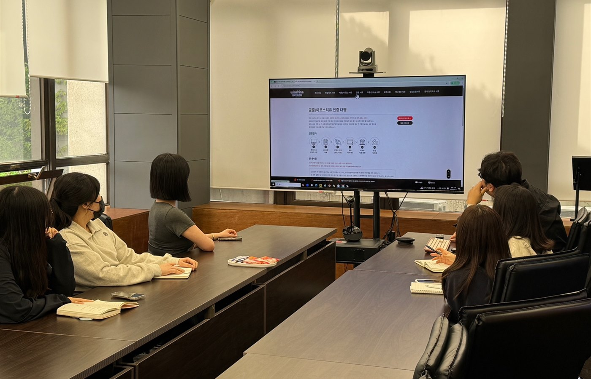

퍼스트디자인 대전지사
읽는 사람 기준으로
다시 쓰는 편집 디자인 팀
연구 성과와 기술을 다루는 자료는 만든 사람의 순서가 아니라 읽는 사람의 순서로 구성돼야 끝까지 읽힙니다. 퍼스트디자인 대전지사는 대덕연구단지와 정부대전청사, 세종·청주·공주 충청권의 연구기관·바이오 기업·공공기관·제조기업 인쇄물을 그 기준으로 만듭니다.
기획 · 편집 디자인 · 인포그래픽 · 번역 · 촬영 · 인쇄 감리
한눈에 보는 대전지사
- 소속
- ㈜퍼스트마케팅컴퍼니 퍼스트디자인 대전지사
- 담당 권역
- 대전 전 지역 · 세종 · 청주 · 공주 · 천안 등 충청권 (방문 미팅 · 출장 촬영)
- 주력 분야
- 연구성과집 · 기관 브로슈어 · 제품 카탈로그 · 제안서 · 학회 포스터 · 소식지
- 주요 고객
- 정부출연연구기관 · 대학 연구센터 · 바이오 기업 · 공공기관 · 대덕산단 제조기업
- 자체 설비
- 인쇄소 (옵셋 · 디지털) · 제본 · 촬영 스튜디오 · 번역 부서
- 진행 원칙
- 초안 선확인 · 수정 횟수 제한 없음 · 비밀유지계약 가능 · 원본 파일 전달
- 연락처
- 1600-9487 (평일 09:00 ~ 18:00) · work@firstmkt.co.kr
하는 일
기획에서 인쇄까지,
세 팀이 한 프로젝트를 맡습니다
기획 · 편집 디자인
연구자와 담당자의 원고를 독자의 순서로 바꾸는 일부터 시작합니다. 목차와 페이지 플랜을 잡고, 표·그래프·도식을 다시 그려 한 페이지에 한 메시지만 남깁니다.
- 원고 구조화 · 목차 설계
- 편집 · 인포그래픽 디자인
- 국문 · 영문 병기 레이아웃
- 도표 · 수치 · 용어 검수
인쇄 · 제본 · 감리
자체 인쇄소에서 색 교정과 인쇄 감리를 같은 팀이 진행합니다. 50부 심사 자료도 5,000부 카탈로그와 같은 기준으로 검수합니다.
- 옵셋 · 디지털 소량 인쇄
- 무선 · 중철 · 양장 제본
- 용지 · 후가공 실물 샘플
- 색 교정 · 감리 · 납품
촬영 · 번역 · 콘텐츠
만든 자료가 실제로 읽히고 검색되게 합니다. 제품과 연구 현장을 지면 기준으로 촬영하고, 번역 부서가 영문판을 같은 일정으로 준비합니다.
- 제품 · 연구시설 · 공장 촬영
- 영문 · 중문 · 베트남어 번역
- 블로그 · SNS 콘텐츠
- 홈페이지 · 랜딩페이지

일하는 원칙
연구자와 담당자의 시간을
아끼는 것이 첫 번째입니다
- 01
당일 방문 미팅
대덕연구단지·정부청사·둔산 등 대전 전 지역과 세종·청주·공주는 필요한 날 바로 찾아갑니다. 용지와 제본 샘플을 실물로 보고 사양을 정합니다.
- 02
초안 선확인
앞부분 몇 페이지를 먼저 디자인해 방향을 확인받은 뒤 전체를 진행합니다. 시안이 나온 뒤 처음부터 다시 만드는 일이 생기지 않습니다.
- 03
단순하게 만들기
표와 각주가 많은 자료일수록 더 단순하게 만드는 것이 기준입니다. 강조할 계열 하나만 기관 색으로 남기고 나머지는 회색으로 낮춥니다.
- 04
한 팀이 끝까지
기획자, 편집 디자이너, 인포그래픽 디자이너, 번역 담당, 인쇄 감리까지 프로젝트마다 전담팀을 꾸려 접수부터 납품까지 책임집니다.
팀 구성
프로젝트마다 이렇게 팀을 꾸립니다
| 팀 | 맡는 일 | 주요 업무 | 퍼스트 멤버들이 말하는 이 팀 |
|---|---|---|---|
| PLAN | 연구자의 원고를 독자의 순서로 바꾸는 기획, 일정과 인쇄 사양을 끝까지 관리 | 원고 구조화 · 목차 설계 / 도표 · 수치 · 용어 검수 / 일정 · 견적 · 인쇄 사양 관리 | 논문 한 편도 세 줄로 요약해 내고, 연구자보다 먼저 오탈자를 잡아내는 사람들 |
| DESIGN | 기술 도해와 인포그래픽으로 복잡한 정보를 한 장에 정리하고 브랜드 톤에 맞춰 지면을 설계 | 편집 · 인포그래픽 디자인 / 로고 · 브랜드 시스템 / 국문 · 영문 병기 레이아웃 | 회로도와 공정도를 받아도 당황하지 않는, 표 정렬이 1mm 어긋나면 잠을 못 자는 디자이너들 |
| 자체 인쇄소에서 색 교정 · 인쇄 · 제본 · 검수까지, 연구 보고서부터 전시 카탈로그까지 책임 | 옵셋 · 디지털 소량 인쇄 / 무선 · 중철 · 양장 제본 / 색 교정 · 감리 · 납품 | 모니터 색과 종이 색의 차이를 손끝으로 맞추는 장인들 | |
| MKT | 촬영 · 번역 · 콘텐츠로, 만든 자료가 실제로 읽히고 검색되게 만드는 팀 | 제품 · 연구 현장 촬영 / 영문 · 중문 · 베트남어 번역 / 블로그 · SNS · 상세페이지 | 만든 자료가 어디서 쓰일지 먼저 생각하고, 성과를 노출 순위와 문의 수로 보고하는 마케터들 |
함께한 기관 · 기업
12년, 3,200건의 납품

오시는 길
대전지사
방문 전 전화 주시면 주차 안내와 함께 담당 기획자가 준비하고 있겠습니다.
- 주소
- 대전광역시 유성구 ○○로 ○○ ○층
- 상담 시간
- 평일 09:00 ~ 18:00 (주말 · 공휴일 휴무)
- 방문 미팅 권역
- 대전 전 지역 · 세종 · 청주 · 공주 · 천안 — 외부인 출입이 제한되는 기관은 화상 회의와 인쇄 견본 우편 발송으로 대신합니다.
FIRST DESIGN DAEJEON
발간 목적과 분량만 알려주시면
당일 견적과 일정을 안내드립니다
기획 · 디자인 · 번역 · 촬영 · 인쇄를 한 팀이 진행합니다.
원고가 정리되기 전이라도 목차와 일정부터 함께 잡아 드립니다.
- 전화 상담1600-9487평일 09:00 ~ 18:00
- 이메일work@firstmkt.co.kr파일 첨부 문의
- 방문 미팅대전 · 세종 · 청주 · 공주필요한 날 바로 찾아갑니다